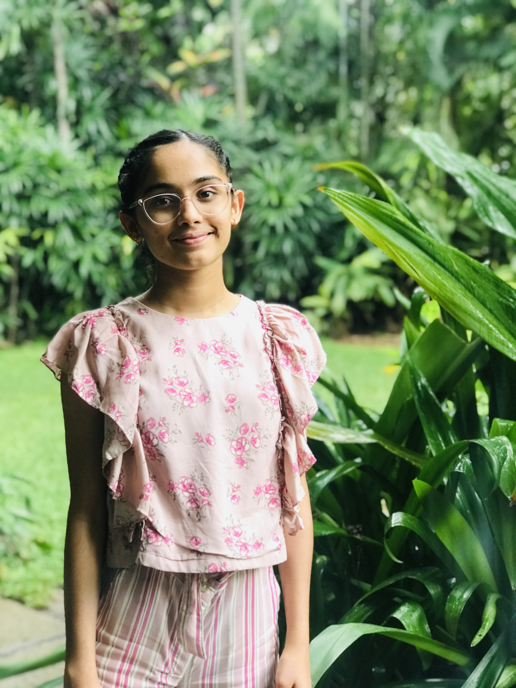
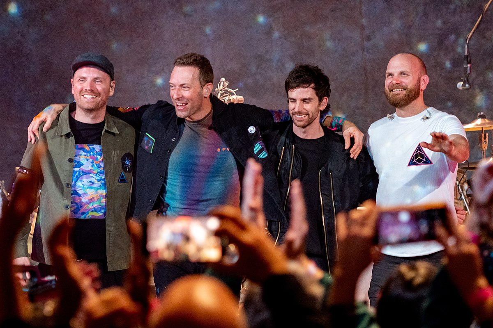

Treya Moodithaya
ABOUT ME
Hi! my name is Treya and I'm currently studying in 12th grade.
I'm a sixteen y/o artist who has an immense passion for music.
I play the guitar, piano and the uke, while also training my vocals in both western and carnatic music. I have a distinction in Trinity College of Music Theory and the same in KSEEEB jr. carnatic music vocals.
To help expand my music and connect with people, I started a youtube channel in 2020 where I love to experiment with my creative side. I also enjoy public speaking and debating, and have taken part in various events that help me connect with people and causes.
Apart from arts, I'm a science enthusiast! I love researching and innovating on the never ending stream of possibilities of this world and hope to use this passion as a driving force in the future.
|

|
ACHEIVEMENTS
-The Chrinicles of Wizardry: This is a book I co - wrote along with three of my friends in 7th grade, its a small insight to a 12 yr olds imaginative mind!
- Crimson Harvard Essay Certification
- IMUN 2021: Outstanding Delegate Award at the UN Women
- DMUN 2021: Honorable Delegate Award at the CCC
- Trinity College of Music: Distinction in Theory of Music, Grade 2
- IIsc Pravega 2022: Pale Blue Dot event finalist
MY FAVORITE BOOKS
- The Power of the Subconscious Mind: Joseph Murphy
- The 7 Habits of Highy Effective people: Stephen Covey
- Flawed: Cecelia Ahern
- Perfect: Cecelia Ahern
MY FAVORITE ARTISTS
- Taylor Swift
- The Beatles
- The 1975
- Coldplay
MUSIC AND ME
- Music
- an extraordinary art of sound that expresses emotions
- What makes me so passionate about it?
- I started singing even before I could form actual words. Music has helped me express my emotions more that words ever could and I have been writing songs ever since I was a little girl. I still have age old journal entries of songs I wrote, imagining my self in a non-existent heartbreak and writing a dramatic symphony about it. Music empowers me and makes me a stronger person. I dont think I can go a day without strumming my guitar and plucking out a random melody. It helps me let out my emotions and also connect with people in ways I never knew I could. I think Music is a part of my soul and existance,which has shaped me to who I am today.
MY FAVORITE SONGS
| SONG |
ARTIST |
FAVORITE LYRIC |
| Yellow |
Coldplay |
For you I'd bleed myself dry |
| New Years Day |
Taylor Swift |
please dont, ever become a stranger whose laugh I can recognize anywhere |
| Be My Mistake |
The 1975 |
save all the jokes you're gonna make |
TAYLOR SWIFT

COLDPLAY

THE 1975

10TH CBSE RESULTS
| SUBJECT |
MARKS |
GRADE |
| Math |
96 |
A+ |
| Science |
98 |
A+ |
| Social Science |
99 |
A+ |
| English |
100 |
A+ |
| Hindi |
87 |
A |
| IT |
98 |
A+ |
MY FUTURE PROJECTS
Dream Colleges
- MIT
- CalTech
- UC Berkley
- Stanford
- Waterloo University
- Why I chose CS
- I believe Computer Science is the driving force of our future, but I also believe that in order to achieve success, we must use our resources wisely. I want to help revolutionise this industry and integrate it with helping mankind and humanity. I want to use this extraordinary tool to build a better world, rather than tear it apart like we are doing now. My ultimate dream is to work for the United Nations and educate people and make their world a better one, all by using the vital aid of technology
CONTACT ME
EMAIL: treyamd@gmail.com
PHONE: 7349514869